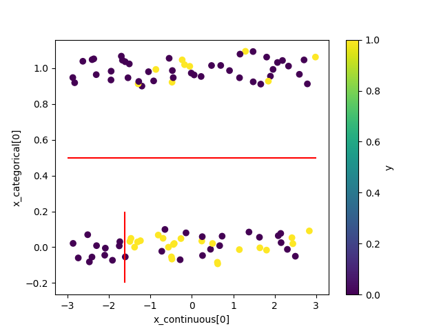
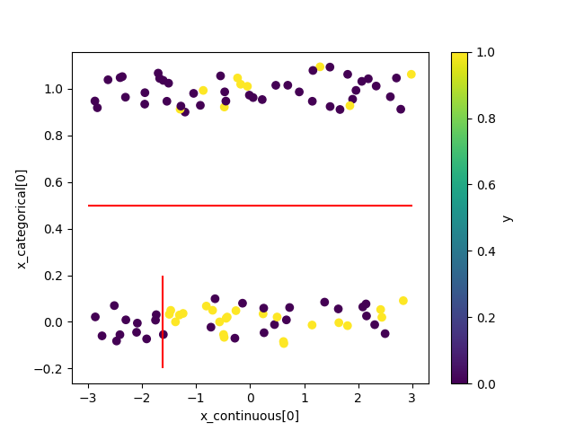

bayesml.metatree package#
 

Module contents#
The stochastic data generative model is as follows:
\(\boldsymbol{x}=[x_1, \ldots, x_p, x_{p+1}, \ldots , x_{p+q}]\) : an explanatory variable. The first \(p\) variables are continuous. The other \(q\) variables are categorical.
\(\mathcal{Y}\) : a space of an objective variable
\(y \in \mathcal{Y}\) : an objective variable
\(D_\mathrm{max} \in \mathbb{N}\) : the maximum depth of trees
\(T\) : a tree whose depth is smaller than or equal to \(D_\mathrm{max}\)
\(\mathcal{T}\) : a set of \(T\)
\(s\) : a node of a tree
\(\mathcal{S}\) : a set of \(s\)
\(\mathcal{I}(T)\) : a set of inner nodes of \(T\)
\(\mathcal{L}(T)\) : a set of leaf nodes of \(T\)
\(\boldsymbol{k}=(k_s)_{s \in \mathcal{S}}\) : feature assignment vector where \(k_s \in \{1, 2,\ldots,p+q\}\). If \(k_s \leq p\), the node \(s\) has a threshold.
\(\boldsymbol{\theta}=(\theta_s)_{s \in \mathcal{S}}\) : a set of parameter
\(s(\boldsymbol{x}) \in \mathcal{L}(T)\) : a leaf node of \(T\) corresponding to \(\boldsymbol{x}\), which is determined according to \(\boldsymbol{k}\) and the thresholds.
The prior distribution is as follows:
\(g_{0,s} \in [0,1]\) : a hyperparameter assigned to \(s \in \mathcal{S}\)
\(M_{T, \boldsymbol{k}}\) : a meta-tree for \((T, \boldsymbol{k})\)
\(\mathcal{T}_{M_{T, \boldsymbol{k}}}\) : a set of \(T\) represented by a meta-tree \(M_{T, \boldsymbol{k}}\)
\(B \in \mathbb{N}\) : the number of meta-trees
\(\mathcal{M}=\{(T_1, \boldsymbol{k}_1), (T_2, \boldsymbol{k}_2), \ldots, (T_B, \boldsymbol{k}_B) \}\) for \(B\) meta-trees \(M_{T_1, \boldsymbol{k}_1}, M_{T_2, \boldsymbol{k}_2}, \dots, M_{T_B, \boldsymbol{k}_B}\). (These meta-trees must be given beforehand by some method, e.g., constructed from bootstrap samples similar to the random forest.)
For \(T' \in M_{T, \boldsymbol{k}}\),
where \(g_{0,s}=0\) for a leaf node \(s\) of a meta-tree \(M_{T, \boldsymbol{k}}\).
For \(\boldsymbol{k}_b \in \{\boldsymbol{k}_1, \boldsymbol{k}_2, \ldots, \boldsymbol{k}_B \}\),
The posterior distribution is as follows:
\(n \in \mathbb{N}\) : a sample size
\(\boldsymbol{x}^n = \{ \boldsymbol{x}_1, \boldsymbol{x}_2, \ldots, \boldsymbol{x}_n \}\)
\(y^n = \{ y_1, y_2, \ldots, y_n \}\)
\(g_{n,s} \in [0,1]\) : a hyperparameter
For \(T' \in M_{T, \boldsymbol{k}}\),
where the updating rules of the hyperparameter are as follows.
where \(s_{\mathrm{child}}\) is the child node of \(s\) on the path corresponding to \(\boldsymbol{x}_{i}\) in \(M_{T, \boldsymbol{k}}\) and
For \(\boldsymbol{k}_b \in \{\boldsymbol{k}_1, \boldsymbol{k}_2, \ldots, \boldsymbol{k}_B \}\),
where \(s_{\lambda}\) is the root node of \(M_{T_b, \boldsymbol{k}_b}\).
The predictive distribution is as follows:
The expectation of the predictive distribution can be calculated as follows.
where the expectation for \(\tilde{q}\) is recursively given as follows.
References
Dobashi, N.; Saito, S.; Nakahara, Y.; Matsushima, T. Meta-Tree Random Forest: Probabilistic Data-Generative Model and Bayes Optimal Prediction. Entropy 2021, 23, 768. https://doi.org/10.3390/e23060768
Nakahara, Y.; Saito, S.; Kamatsuka, A.; Matsushima, T. Probability Distribution on Full Rooted Trees. Entropy 2022, 24, 328. https://doi.org/10.3390/e24030328
- class bayesml.metatree.GenModel(c_dim_continuous, c_dim_categorical, c_max_depth=2, c_num_children_vec=2, c_num_assignment_vec=None, c_ranges=None, SubModel=<module 'bayesml.bernoulli' from 'C:\\Users\\nakahara\\Documents\\GitHub\\BayesML\\bayesml\\bernoulli\\__init__.py'>, sub_constants={}, root=None, h_k_weight_vec=None, h_g=0.5, sub_h_params={}, h_metatree_list=[], h_metatree_prob_vec=None, seed=None)#
Bases:
GenerativeThe stochastice data generative model and the prior distribution
- Parameters:
- c_dim_continuousint
A non-negative integer
- c_dim_categoricalint
A non-negative integer
- c_num_children_vecnumpy.ndarray, optional
A vector of positive integers whose length is
c_dim_continuous+c_dim_categorical, by default [2,2,…,2]. The firstc_dim_continuouselements represent the numbers of children of continuous features at inner nodes. The otherc_dim_categorialelements represent those of categorical features. If a single integer is input, it will be broadcasted.- c_max_depthint, optional
A positive integer, by default 2
- c_num_assignment_vecnumpy.ndarray, optional
A vector of positive integers whose length is
c_dim_continuous+c_dim_categorical. The firstc_dim_continuouselements represent the maximum assignment numbers of continuous features on a path. The otherc_dim_categorialelements represent those of categorical features. If it has a negative element (e.g., -1), the corresponding feature will be assigned any number of times. By default [c_max_depth,…,c_max_depth,1,…,1].- c_rangesnumpy.ndarray, optional
A numpy.ndarray whose size is (c_dim_continuous,2). A threshold for the
k-th continuous feature will be generated betweenc_ranges[k,0]andc_ranges[k,1]. By default, [[-3,3],[-3,3],…,[-3,3]].- SubModelclass, optional
bernoulli, categorical, poisson, normal, exponential, or linearregression, by default bernoulli
- sub_constantsdict, optional
constants for self.SubModel.GenModel, by default {}
- rootmetatree._Node, optional
A root node of a meta-tree, by default a tree consists of only one node.
- h_k_weight_vecnumpy.ndarray, optional
A vector of positive real numbers whose length is
c_dim_continuous+c_dim_categorical, by default [1,…,1].- h_gfloat, optional
A real number in \([0, 1]\), by default 0.5
- sub_h_paramsdict, optional
h_params for self.SubModel.GenModel, by default {}
- h_metatree_listlist of metatree._Node, optional
Root nodes of meta-trees, by default []
- h_metatree_prob_vecnumpy.ndarray, optional
A vector of real numbers in \([0, 1]\) that represents prior distribution of h_metatree_list, by default uniform distribution Sum of its elements must be 1.0.
- seed{None, int}, optional
A seed to initialize numpy.random.default_rng(), by default None
- Attributes:
- c_dim_features: int
c_dim_continuous + c_dim_categorical
Methods
gen_params([feature_fix, threshold_fix, ...])Generate the parameter from the prior distribution.
gen_sample([sample_size, x_continuous, ...])Generate a sample from the stochastic data generative model.
Get constants of GenModel.
Get the hyperparameters of the prior distribution.
Get the parameter of the sthocastic data generative model.
load_h_params(filename)Load the hyperparameters to h_params.
load_params(filename)Load the parameters saved by
save_params.save_h_params(filename)Save the hyperparameters using python
picklemodule.save_params(filename)Save the parameters using python
picklemodule.save_sample(filename, sample_size[, x])Save the generated sample as NumPy
.npzformat.set_h_params([h_k_weight_vec, h_g, ...])Set the hyperparameters of the prior distribution.
set_params([root])Set the parameter of the sthocastic data generative model.
visualize_model([filename, format, ...])Visualize the stochastic data generative model and generated samples.
- get_constants()#
Get constants of GenModel.
- Returns:
- constantsdict of {str: int, numpy.ndarray}
"c_dim_continuous": the value ofself.c_dim_continuous"c_dim_categorical": the value ofself.c_dim_categorical"c_num_children_vec": the value ofself.c_num_children_vec"c_max_depth": the value ofself.c_max_depth"c_num_assignment_vec": the value ofself.c_num_assignment_vec"c_ranges": the value ofself.c_ranges
- set_h_params(h_k_weight_vec=None, h_g=None, sub_h_params=None, h_metatree_list=None, h_metatree_prob_vec=None)#
Set the hyperparameters of the prior distribution.
- Parameters:
- h_k_weight_vecnumpy.ndarray, optional
A vector of positive real numbers whose length is
c_dim_continuous+c_dim_categorical, by default None.- h_gfloat, optional
A real number in \([0, 1]\), by default None
- sub_h_paramsdict, optional
h_params for self.SubModel.GenModel, by default None
- h_metatree_listlist of metatree._Node, optional
Root nodes of meta-trees, by default None
- h_metatree_prob_vecnumpy.ndarray, optional
A vector of real numbers in \([0, 1]\) that represents prior distribution of h_metatree_list, by default None. Sum of its elements must be 1.0.
- get_h_params()#
Get the hyperparameters of the prior distribution.
- Returns:
- h_paramsdict of {str: float, list, dict, numpy.ndarray}
"h_k_weight_vec": the value ofself.h_k_weight_vec"h_g": the value ofself.h_g"sub_h_params": the value ofself.sub_h_params"h_metatree_list": the value ofself.h_metatree_list"h_metatree_prob_vec": the value ofself.h_metatree_prob_vec
- gen_params(feature_fix=False, threshold_fix=False, tree_fix=False, threshold_type='even')#
Generate the parameter from the prior distribution.
The generated vaule is set at
self.root.- Parameters:
- feature_fixbool, optional
If
True, feature assignment indices will be fixed, by defaultFalse.- threshold_fixbool, optional
If
True, thresholds for continuous features will be fixed, by defaultFalse. Iffeature_fixisFalse,threshold_fixmust beFalse.- tree_fixbool, optional
If
True, tree shape will be fixed, by defaultFalse. Iffeature_fixisFalse,tree_fixmust beFalse.- threshold_type{‘even’, ‘random’}, optional
A type of threshold generating procedure, by default
'even'If'even', self.c_ranges will be recursively divided by equal intervals. if'random', self.c_ranges will be recursively divided by at random intervals.
- set_params(root=None)#
Set the parameter of the sthocastic data generative model.
- Parameters:
- rootmetatree._Node, optional
A root node of a meta-tree, by default None.
- get_params()#
Get the parameter of the sthocastic data generative model.
- Returns:
- paramsdict of {str:metatree._Node}
"root": The value ofself.root.
- gen_sample(sample_size=None, x_continuous=None, x_categorical=None)#
Generate a sample from the stochastic data generative model.
- Parameters:
- sample_sizeint, optional
A positive integer, by default
None- x_continuousnumpy ndarray, optional
2 dimensional float array whose size is
(sample_size,c_dim_continuous), by default None.- x_categoricalnumpy ndarray, optional
2 dimensional int array whose size is
(sample_size,c_dim_categorical), by default None. Each element x_categorical[i,j] must satisfy 0 <= x_categorical[i,j] < self.c_num_children_vec[self.c_dim_continuous+i].
- Returns:
- x_continuousnumpy ndarray
2 dimensional float array whose size is
(sample_size,c_dim_continuous).- x_categoricalnumpy ndarray, optional
2 dimensional int array whose size is
(sample_size,c_dim_categorical). Each element x_categorical[i,j] must satisfies 0 <= x_categorical[i,j] < self.c_num_children_vec[self.c_dim_continuous+i].- ynumpy ndarray
1 dimensional array whose size is
sample_size.
- save_sample(filename, sample_size, x=None)#
Save the generated sample as NumPy
.npzformat.It is saved as a NpzFile with keyword: “x”.
- Parameters:
- filenamestr
The filename to which the sample is saved.
.npzwill be appended if it isn’t there.- sample_sizeint, optional
A positive integer, by default
None- x_continuousnumpy ndarray, optional
2 dimensional float array whose size is
(sample_size,c_dim_continuous), by default None.- x_categoricalnumpy ndarray, optional
2 dimensional int array whose size is
(sample_size,c_dim_categorical), by default None. Each element x_categorical[i,j] must satisfy 0 <= x_categorical[i,j] < self.c_num_children_vec[self.c_dim_continuous+i].
See also
- visualize_model(filename=None, format=None, sample_size=100, x_continuous=None, x_categorical=None)#
Visualize the stochastic data generative model and generated samples.
Note that values of categorical features will be shown with jitters.
- Parameters:
- filenamestr, optional
Filename for saving the figure, by default
None- formatstr, optional
Rendering output format (
"pdf","png", …).- sample_sizeint, optional
A positive integer, by default 100
- x_continuousnumpy ndarray, optional
2 dimensional float array whose size is
(sample_size,c_dim_continuous), by default None.- x_categoricalnumpy ndarray, optional
2 dimensional int array whose size is
(sample_size,c_dim_categorical), by default None. Each element x_categorical[i,j] must satisfy 0 <= x_categorical[i,j] < self.c_num_children_vec[self.c_dim_continuous+i].
See also
Examples
>>> from bayesml import metatree >>> model = metatree.GenModel( >>> c_dim_continuous=1, >>> c_dim_categorical=1) >>> model.gen_params(threshold_type='random') >>> model.visualize_model()
- class bayesml.metatree.LearnModel(c_dim_continuous, c_dim_categorical, c_num_children_vec=2, c_max_depth=2, c_num_assignment_vec=None, c_ranges=None, SubModel=<module 'bayesml.bernoulli' from 'C:\\Users\\nakahara\\Documents\\GitHub\\BayesML\\bayesml\\bernoulli\\__init__.py'>, sub_constants={}, h0_k_weight_vec=None, h0_g=0.5, sub_h0_params={}, h0_metatree_list=[], h0_metatree_prob_vec=None)#
Bases:
Posterior,PredictiveMixinThe posterior distribution and the predictive distribution.
- Parameters:
- c_dim_continuousint
A non-negative integer
- c_dim_categoricalint
A non-negative integer
- c_num_children_vecnumpy.ndarray, optional
A vector of positive integers whose length is
c_dim_continuous+c_dim_categorical, by default [2,2,…,2]. The firstc_dim_continuouselements represent the numbers of children of continuous features at inner nodes. The otherc_dim_categorialelements represent those of categorical features. If a single integer is input, it will be broadcasted.- c_max_depthint, optional
A positive integer, by default 2
- c_num_assignment_vecnumpy.ndarray, optional
A vector of positive integers whose length is
c_dim_continuous+c_dim_categorical. The firstc_dim_continuouselements represent the maximum assignment numbers of continuous features on a path. The otherc_dim_categorialelements represent those of categorical features. If it has a negative element (e.g., -1), the corresponding feature will be assigned any number of times. By default [c_max_depth,…,c_max_depth,1,…,1].- c_rangesnumpy.ndarray, optional
A numpy.ndarray whose size is (c_dim_continuous,2). A threshold for the
k-th continuous feature will be generated betweenc_ranges[k,0]andc_ranges[k,1]. By default, [[-3,3],[-3,3],…,[-3,3]].- SubModelclass, optional
bernoulli, categorical, poisson, normal, exponential, or linearregression, by default bernoulli
- sub_constantsdict, optional
constants for self.SubModel.LearnModel, by default {}
- h0_k_weight_vecnumpy.ndarray, optional
A vector of positive real numbers whose length is
c_dim_continuous+c_dim_categorical, by default [1,…,1].- h0_gfloat, optional
A real number in \([0, 1]\), by default 0.5
- sub_h0_paramsdict, optional
h0_params for self.SubModel.LearnModel, by default {}
- h0_metatree_listlist of metatree._Node, optional
Root nodes of meta-trees, by default []
- h0_metatree_prob_vecnumpy.ndarray, optional
A vector of real numbers in \([0, 1]\) that represents prior distribution of h0_metatree_list, by default uniform distribution Sum of its elements must be 1.0.
- Attributes:
- c_dim_features: int
c_dim_continuous + c_dim_categorical
- hn_k_weight_vecnumpy.ndarray
A vector of positive real numbers whose length is
c_dim_continuous+c_dim_categorical- hn_gfloat
A real number in \([0, 1]\)
- sub_hn_paramsdict
hn_params for self.SubModel.LearnModel
- hn_metatree_listlist of metatree._Node
Root nodes of meta-trees
- hn_metatree_prob_vecnumpy.ndarray
A vector of real numbers in \([0, 1]\) that represents prior distribution of h0_metatree_list. Sum of its elements is 1.0.
Methods
calc_pred_dist([x_continuous, x_categorical])Calculate the parameters of the predictive distribution.
estimate_params([loss, visualize, filename, ...])Estimate the parameter under the given criterion.
Get constants of LearnModel.
Get the hyperparameters of the prior distribution.
Get the hyperparameters of the posterior distribution.
Get the parameters of the predictive distribution.
load_h0_params(filename)Load the hyperparameters to h0_params.
load_hn_params(filename)Load the hyperparameters to hn_params.
make_prediction([loss])Predict a new data point under the given criterion.
overwrite_h0_params()Overwrite the initial values of the hyperparameters of the posterior distribution by the learned values.
pred_and_update([x_continuous, ...])Predict a new data point and update the posterior sequentially.
reset_hn_params()Reset the hyperparameters of the posterior distribution to their initial values.
save_h0_params(filename)Save the hyperparameters using python
picklemodule.save_hn_params(filename)Save the hyperparameters using python
picklemodule.set_h0_params([h0_k_weight_vec, h0_g, ...])Set the hyperparameters of the prior distribution.
set_hn_params([hn_k_weight_vec, hn_g, ...])Set the hyperparameters of the posterior distribution.
update_posterior([x_continuous, ...])Update the hyperparameters of the posterior distribution using traning data.
visualize_posterior([filename, format, ...])Visualize the posterior distribution for the parameter.
- get_constants()#
Get constants of LearnModel.
- Returns:
- constantsdict of {str: int, numpy.ndarray}
"c_dim_continuous": the value ofself.c_dim_continuous"c_dim_categorical": the value ofself.c_dim_categorical"c_num_children_vec": the value ofself.c_num_children_vec"c_max_depth": the value ofself.c_max_depth"c_num_assignment_vec": the value ofself.c_num_assignment_vec"c_ranges": the value ofself.c_ranges
- set_h0_params(h0_k_weight_vec=None, h0_g=None, sub_h0_params=None, h0_metatree_list=None, h0_metatree_prob_vec=None)#
Set the hyperparameters of the prior distribution.
- Parameters:
- h0_k_weight_vecnumpy.ndarray, optional
A vector of positive real numbers whose length is
c_dim_continuous+c_dim_categorical, by default None.- h0_gfloat, optional
A real number in \([0, 1]\), by default None
- sub_h0_paramsdict, optional
h0_params for self.SubModel.LearnModel, by default None
- h0_metatree_listlist of metatree._Node, optional
Root nodes of meta-trees, by default None
- h0_metatree_prob_vecnumpy.ndarray, optional
A vector of real numbers in \([0, 1]\) that represents prior distribution of h0_metatree_list, by default None. Sum of its elements must be 1.0.
- get_h0_params()#
Get the hyperparameters of the prior distribution.
- Returns:
- h0_paramsdict of {str: float, list, dict, numpy.ndarray}
"h0_k_weight_vec": the value ofself.h0_k_weight_vec"h0_g": the value ofself.h0_g"sub_h0_params": the value ofself.sub_h0_params"h0_metatree_list": the value ofself.h0_metatree_list"h0_metatree_prob_vec": the value ofself.h0_metatree_prob_vec
- set_hn_params(hn_k_weight_vec=None, hn_g=None, sub_hn_params=None, hn_metatree_list=None, hn_metatree_prob_vec=None)#
Set the hyperparameters of the posterior distribution.
- Parameters:
- hn_k_weight_vecnumpy.ndarray, optional
A vector of positive real numbers whose length is
c_dim_continuous+c_dim_categorical, by default None.- hn_gfloat, optional
A real number in \([0, 1]\), by default None
- sub_hn_paramsdict, optional
hn_params for self.SubModel.LearnModel, by default None
- hn_metatree_listlist of metatree._Node, optional
Root nodes of meta-trees, by default None
- hn_metatree_prob_vecnumpy.ndarray, optional
A vector of real numbers in \([0, 1]\) that represents prior distribution of hn_metatree_list, by default None. Sum of its elements must be 1.0.
- get_hn_params()#
Get the hyperparameters of the posterior distribution.
- Returns:
- hn_paramsdict of {str: float, list, dict, numpy.ndarray}
"hn_k_weight_vec": the value ofself.hn_k_weight_vec"hn_g": the value ofself.hn_g"sub_hn_params": the value ofself.sub_hn_params"hn_metatree_list": the value ofself.hn_metatree_list"hn_metatree_prob_vec": the value ofself.hn_metatree_prob_vec
- update_posterior(x_continuous=None, x_categorical=None, y=None, alg_type='MTRF', **kwargs)#
Update the hyperparameters of the posterior distribution using traning data.
- Parameters:
- x_continuousnumpy ndarray, optional
2 dimensional float array whose size is
(sample_size,c_dim_continuous), by default None.- x_categoricalnumpy ndarray, optional
2 dimensional int array whose size is
(sample_size,c_dim_categorical), by default None. Each element x_categorical[i,j] must satisfy 0 <= x_categorical[i,j] < self.c_num_children_vec[self.c_dim_continuous+i].- ynumpy ndarray
values of objective variable whose dtype may be int or float
- alg_type{‘MTRF’, ‘given_MT’}, optional
type of algorithm, by default ‘MTRF’
- **kwargsdict, optional
optional parameters of algorithms, by default {}
- estimate_params(loss='0-1', visualize=True, filename=None, format=None)#
Estimate the parameter under the given criterion.
The approximate MAP meta-tree \(M_{T,\boldsymbol{k}_b} = \mathrm{argmax} p(M_{T,\boldsymbol{k}_{b'}} | \boldsymbol{x}^n, y^n)\) will be returned.
- Parameters:
- lossstr, optional
Loss function underlying the Bayes risk function, by default
"0-1". This function supports only"0-1".- visualizebool, optional
If
True, the estimated metatree will be visualized, by defaultTrue. This visualization requiresgraphviz.- filenamestr, optional
Filename for saving the figure, by default
None- formatstr, optional
Rendering output format (
"pdf","png", …).
- Returns:
- map_rootmetatree._Node
The root node of the estimated meta-tree that also contains the estimated parameters in each node.
Warning
Multiple metatrees can represent equivalent model classes. This function does not take such duplication into account.
See also
- visualize_posterior(filename=None, format=None, num_metatrees=3, h_params=False)#
Visualize the posterior distribution for the parameter.
This method requires
graphviz.- Parameters:
- filenamestr, optional
Filename for saving the figure, by default
None- formatstr, optional
Rendering output format (
"pdf","png", …).- num_metatreesint, optional
Number of metatrees to be visualized, by default 3.
- h_paramsbool, optional
If
True, hyperparameters at each node will be visualized. ifFalse, estimated parameters at each node will be visulaized.
See also
Examples
>>> from bayesml import metatree >>> gen_model = metatree.GenModel( >>> c_dim_continuous=1, >>> c_dim_categorical=1) >>> gen_model.gen_params(threshold_type='random') >>> x_continuous,x_categorical,y = gen_model.gen_sample(200) >>> learn_model = metatree.LearnModel( >>> c_dim_continuous=1, >>> c_dim_categorical=1) >>> learn_model.update_posterior(x_continuous,x_categorical,y) >>> learn_model.visualize_posterior(num_metatrees=2)

- get_p_params()#
Get the parameters of the predictive distribution.
This model does not have a simple parametric expression of the predictive distribution. Therefore, this function returns
None.- Returns:
None
- calc_pred_dist(x_continuous=None, x_categorical=None)#
Calculate the parameters of the predictive distribution.
- Parameters:
- x_continuousnumpy ndarray, optional
A float vector whose length is
self.c_dim_continuous, by default None.- x_categoricalnumpy ndarray, optional
A int vector whose length is
self.c_dim_categorical, by default None. Each element x_categorical[i] must satisfy 0 <= x_categorical[i] < self.c_num_children_vec[self.c_dim_continuous+i].
- make_prediction(loss='squared')#
Predict a new data point under the given criterion.
- Parameters:
- lossstr, optional
Loss function underlying the Bayes risk function, by default “squared”. This function supports “squared”, “0-1”, and “KL”.
- Returns:
- predicted_value{float, numpy.ndarray}
The predicted value under the given loss function.
- pred_and_update(x_continuous=None, x_categorical=None, y=None, loss='squared')#
Predict a new data point and update the posterior sequentially.
- Parameters:
- x_continuousnumpy ndarray, optional
A float vector whose length is
self.c_dim_continuous, by default None.- x_categoricalnumpy ndarray, optional
A int vector whose length is
self.c_dim_categorical, by default None. Each element x_categorical[i] must satisfy 0 <= x_categorical[i] < self.c_num_children_vec[self.c_dim_continuous+i].- ynumpy ndarray
values of objective variable whose dtype may be int or float
- lossstr, optional
Loss function underlying the Bayes risk function, by default “squared”. This function supports “squared”, “0-1”, and “KL”.
- Returns:
- predicted_value{float, numpy.ndarray}
The predicted value under the given loss function.